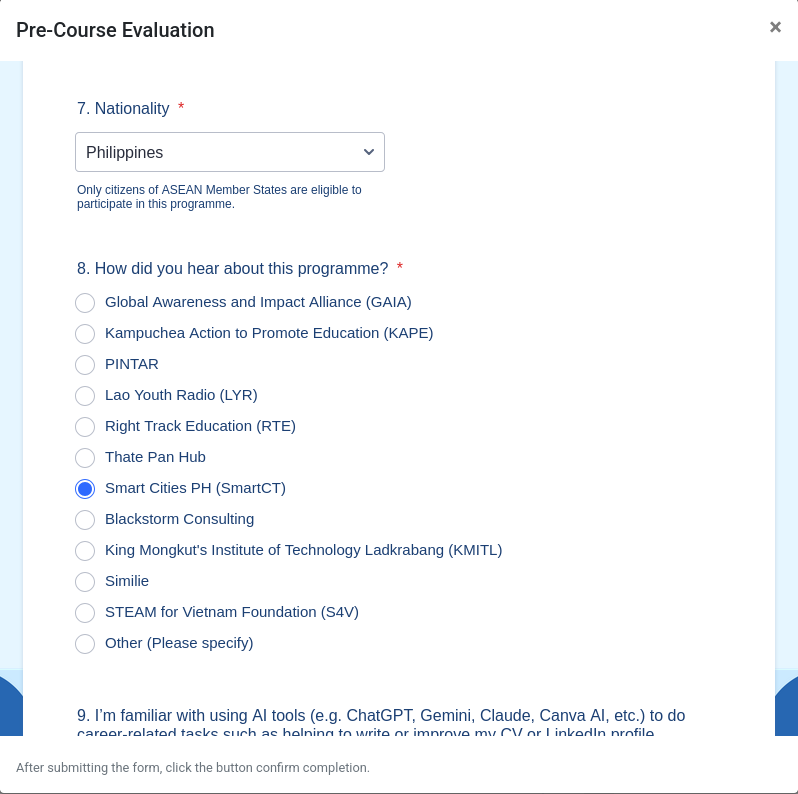

What you get
Why complete the course
Official certificate
Issued on the ASEAN Digital Academy platform when you complete all requirements: a career credential you can put on your CV and LinkedIn.
1-year LinkedIn Premium
Granted after submission of requirements (e.g. LinkedIn profile, improved CV based on what you learned) and subject to internal verification by the ASEAN AHEAD team.
Mentorship & job fairs
Completing the course makes you eligible for the program's Peer Mentorship component and Virtual Job Fairs. Spots are limited and selection is competitive—see how it works.
Getting started
Your journey, step by step
-
Create your ADA account
Go to ada.aseanfoundation.org and register using an active email. This same email is used to verify your completion later.
-
Enroll in the course
Log in and open the AI Career Readiness Course.
-
Take the pre-course survey and pre-course evaluation
Do this before touching the modules.
When filling in the evaluation, select:
7. Nationality
Philippines
8. How did you hear about this programme?
Smart Cities PH (SmartCT)
—like this:
-
Complete all five modules
Each module has three video parts plus a PDF, with a pre-module test before and a post-module test after.
Heads up on the Learning Material: the platform only marks it complete when you've gone through it to the very last page. If a module shows as unfinished, go back into its Learning Material and continue to the end—stopping partway through is the most common reason a module doesn't register as complete.
-
Join or start a discussion
Reply to at least one discussion or create one in any module. The easiest way in: browse what others have posted and add to a thread that resonates with you. Make it count—share a genuine insight, question, or reflection from the module. Your posts build the learning community, and thoughtful contributions are what make it worth reading.
Important: random or nonsensical text (e.g. "asdf", "done", a copy-pasted sentence with no connection to the module) may invalidate your completion and affect the benefits that come with it. One or two honest sentences about what you learned or want to ask is all it takes. And you're not limited to one—you can keep joining or starting discussions even after you've finished the modules.
-
Finish the post-course evaluation
Don't forget this step. Your completion doesn't count without it. Same as in the pre-course evaluation, select:
7.Nationality
Philippines
8. How did you hear about this programme?
Smart Cities PH (SmartCT) -
Get your certificate, then LinkedIn Premium
Download your certificate from the platform. To claim your 1-year LinkedIn Premium, make sure you provide in the the Post-Course Evaluation: your LinkedIn profile and a CV you made using what you learned from the course. The ASEAN AHEAD team then verifies everything internally. Expect results within 2–4 weeks. You'll be notified whether your LinkedIn Premium is granted or if you need to submit additional requirements.
-
Congratulations! What's next?
We may follow-up with a short post-course survey. Answering helps us match you with Virtual Job Fair opportunities and invite you to events near you. It's optional and never affects your certificate or LinkedIn Premium.
Don't miss these
The three completion requirements
The platform only counts you as complete—and unlocks your certificate—when all three are done:
- Complete 100% of all modules in the course
- Create at least one discussion, or participate in at least one discussion started by others, in any module
- Complete the Post-Course Evaluation
After the course
Mentorship and job fairs—for select completers
Finishing the AI Career Readiness Course (which runs through December 2026) does more than earn your certificate and LinkedIn Premium—it makes you eligible for what comes next: the program's Peer Mentorship component and Virtual Job Fair events, where completers connect with mentors and meet potential employers.
Tips
Smooth sailing
On mobile? The course is mobile-friendly, but tests and discussions are easier on a laptop if you have access to one.
Low connectivity? Join a synchronous event (weekly webinars or an in-person session near you) where a facilitator guides the whole cohort through together.
Went async? If you joined through an intro event or the open call, aim to finish within your cohort's deadline—your facilitator will check in weekly until you're done.
Stuck? Ask your facilitator first; they can solve most login, test, and playback issues on the spot.
Ways to join
Three ways to join
Synchronous webinars
Recurring, centrally hosted online sessions. This is the default funnel. Complete the whole course live with a facilitator guiding you.
See webinar dates → On demandIn-person events
Scheduled when a partner, school, or host requests one and meets the minimum event requirements. We bring the course; they bring the people.
See in-person events → AnytimeOpen asynchronous call
Sign up any time and complete the course at your own pace—with a facilitator checking in until you finish.
Start self-paced →